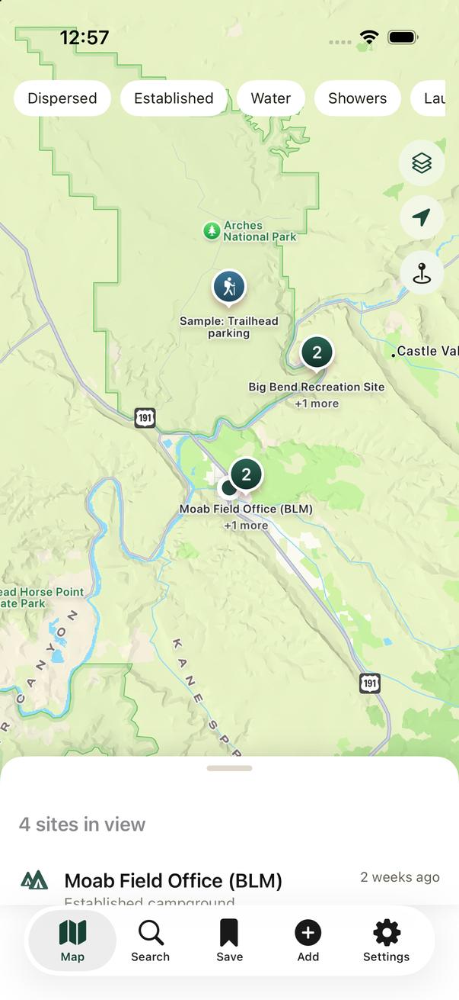
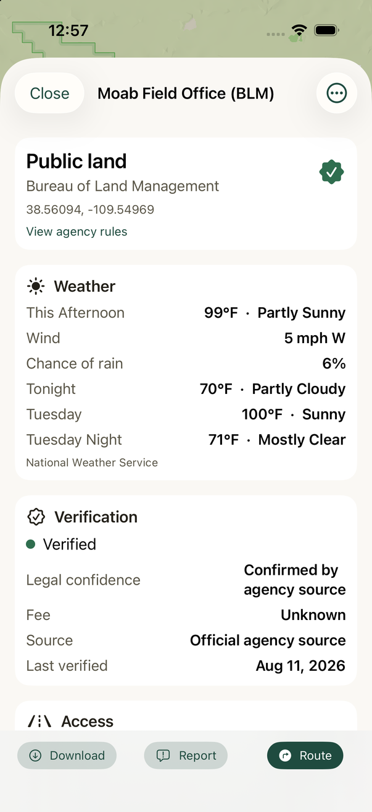
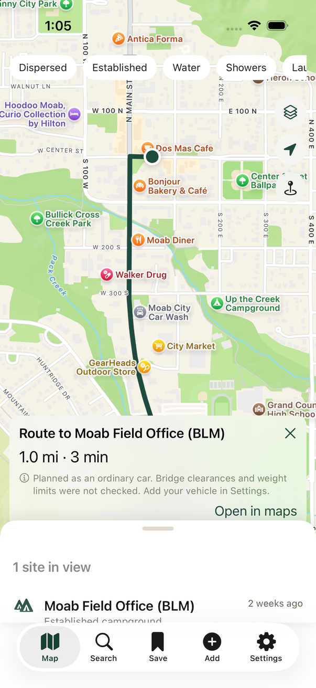
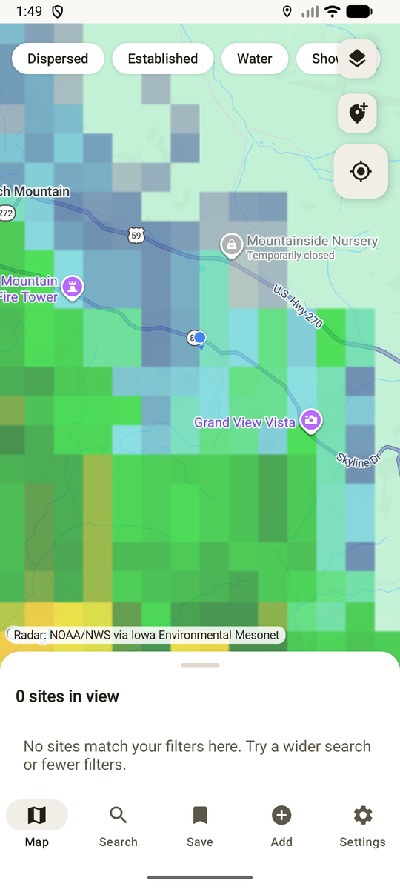

Honest legal status
Sites are labelled by how sure we are: confirmed by an agency source, likely legal, or unknown. The app never presents a guess as a fact.
A camping map for nomads, vanlifers, and RV travelers — built around one question: am I actually allowed to sleep here?
OpenCamp Atlas ships with over 16,000 camping sites on U.S. public land, drawn from Forest Service and Bureau of Land Management records. Every site says where its information came from and how confident that information is, because a campsite you cannot legally use is worse than no campsite at all.
In development. OpenCamp Atlas has not been released yet. This site hosts the app's support, privacy, and terms pages.

Every feature exists because guessing wrong on the road costs real time, fuel, or safety.
Sites are labelled by how sure we are: confirmed by an agency source, likely legal, or unknown. The app never presents a guess as a fact.
Enter your height, width, length, and weight, and routes avoid low bridges and weight limits. Leave them blank and the app says plainly that clearances were not checked.
Official U.S. forecasts and active alerts for the site you are looking at. When the service states no chance of rain, you see nothing rather than an invented zero.
Real weather radar over the map, straight from NOAA. Never cached, because a radar image from an hour ago over a storm is worse than none.
The whole site catalogue is bundled in the app, so browsing works with no bars. Download topographic map regions before you lose service.
No account, no analytics, no crash reporting, no ads, no data sales. Your saved sites, notes, trips, and vehicle photos stay on your phone.



Camping data is public record. Every source below is credited in the app under “About this map”.
| Source | What it provides | Licence |
|---|---|---|
| U.S. Forest Service | Campgrounds and dispersed camping areas on national forest land | U.S. government, public domain |
| Bureau of Land Management | Recreation sites and campgrounds on BLM land | U.S. government, public domain |
| OpenStreetMap | Amenities only — drinking water, showers, laundry, dump stations | Open Database Licence 1.0 |
| USGS The National Map | Topographic map tiles, downloadable for offline use | U.S. government, public domain |
| National Weather Service | Forecasts and active weather alerts | U.S. government, public domain |
| NOAA NEXRAD, via Iowa Environmental Mesonet | Live weather radar tiles | U.S. government, public domain |
| TomTom | Route planning that respects vehicle dimensions | Commercial API |
| Apple Maps and Google Maps | The base map on iOS and Android respectively | Platform terms |
No. There is no account, no analytics SDK, no advertising identifier, and no crash reporting. Your location is used to draw the map, find nearby sites, plan a route, and fetch a forecast — and it is sent only to the map, routing, and weather services listed in the Privacy Policy.
Yes for browsing. The full site catalogue ships inside the app, so searching and reading site details work offline. Routing, forecasts, and radar need a connection, and topographic map regions can be downloaded ahead of time.
Treat the app as a starting point, never as permission. Sites carry a confidence label, and many are marked unknown because the agency record itself is incomplete. Posted signs and current agency rules always win. See the Safety Notice.
Because you have not entered its dimensions. The app will not invent a height for you — a wrong height is more dangerous than no height. Add your vehicle in Settings and the route panel will confirm the dimensions were used.
Yes. There are no in-app purchases and no subscription.